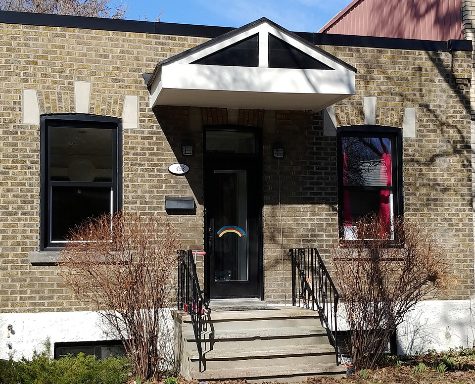

| Place | Local name | Phase years | Storeys | Roof | Window | Cladding | Garage |
|---|---|---|---|---|---|---|---|
| Rosemont–La Petite-Patrie (borough of Montréal) | Maison shoebox Maison de type « shoebox » | 1904 – 1940 | 1 | flat | vertical | clay-brick-red, clay-brick-beige-brown, wood-clapboard | none |
| Villeray–Saint-Michel–Parc-Extension | Shoebox of the early 20th century Shoebox du début du 20e siècle | 1915 – 1940 | 1 | flat | vertical | clay-brick, wood-clapboard | none |
| Villeray–Saint-Michel–Parc-Extension | Shoebox of the mid-20th century Shoebox du milieu du 20e siècle | 1940 – 1960 | 1 | flat | vertical | clay-brick, stone | integrated-facade |


